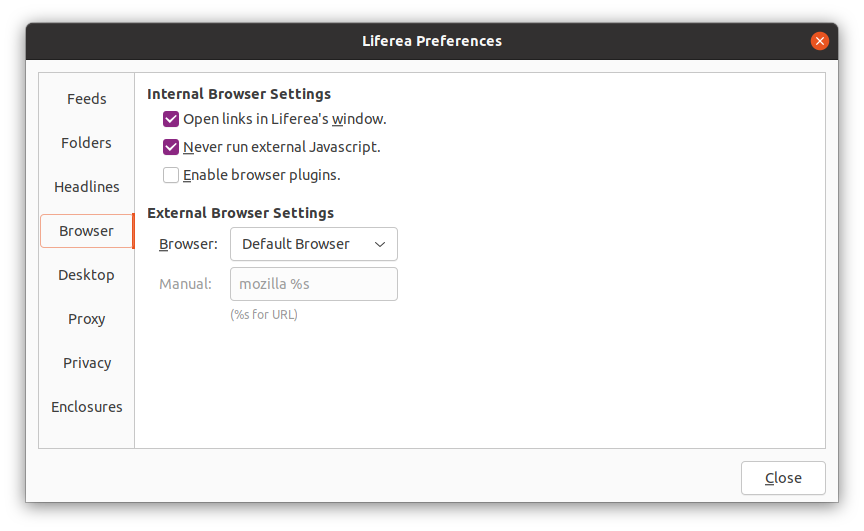
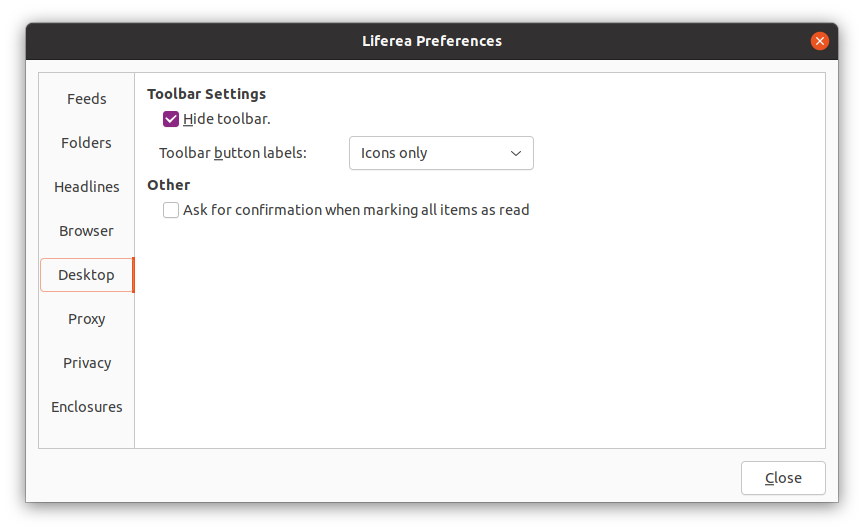
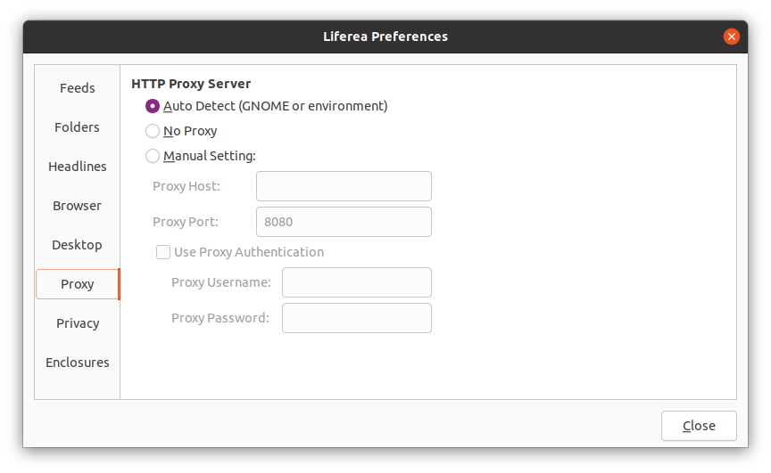

Настройка параметров программы
Диалоговое окно настройки параметров программы может быть открыто с помощью панели инструментов или меню «Программа». Оно подразделяется на семь вкладок, содержимое которых описывается в данном руководстве.
Каналы

- Хранение новостей в кэш-памяти: Здесь можно задать число новостей, сохраняемых по умолчанию в подписках. Этот параметр обладает меньшим приоритетом и может быть переопределён при указании размера кэша для хранения новостей в свойствах конкретной подписки.
-
Параметры обновления каналов: Здесь можно задать интервал
обновления по умолчанию для всех подписок. Этот параметр обладает меньшим
приоритетом и может быть переопределён при указании интервала обновления
в свойствах конкретной подписки.
Флажок «Обновлять все каналы при запуске» позволяет контролировать возможность проведения обновления сразу после запуска программы.
Папки

-
Параметры отображения папки: С помощью этих флажков можно управлять содержимым списка новостей при щелчке по папке Liferea. По умолчанию загружаются все непрочитанные новости, а прочитанные — скрываются.
Обычно удобно оставить оба флажка, поскольку это позволяет быстро пробежаться по всем непрочитанным новостям выбранного набора каналов.
- Значки каналов (Favicons): Эта кнопка позволяет инициировать обновление всех значков всех подписок.
Заголовки

- Чтение заголовков: Здесь можно задать комбинацию клавиш для пролистывания всех непрочитанных заголовков.
- Вид по умолчанию Выберите здесь наиболее предпочтительный режим отображения.
- Отложить удаление прочтённых новостей из папок и папок поиска При чтении новостей в стандартной папке или папке поиска, например «Unread», можно отложить удаление новостей из списка до моментa перехода в другую папку. Это даёт возможность перечитать уже прочитанные новости или изменить их статус прочтения. Прочитанные новости отображаются нежирным шрифтом.
- Интеграция с веб-сервисами: Здесь можно задать конфигурацию предпочтитаемого веб-сайта социальных закладок. Этот параметр используется при выполнении команды «Публиковать закладки» из контекстного меню новости или при просмотре в виде HTML.
Браузер

- Встроенный браузер: Здесь можно настроить три параметра. Прежде всего следует указать где будут открываться внешние ссылки новости при переходе: во встроенном браузере или в соответствующем внешнем браузере. Второй параметр позволяет отключить Javascript. Третий параметр позволяет включать подключаемые модули браузера.
-
Внешний браузер: При переходе по внешним ссылкам новости
Liferea запускает команду для открытия браузера, которую можно
определить здесь. В раскрывающемся списке предлагается либо
запускать браузер по умолчанию, либо «Задать вручную» с указанием
команды запуска браузера. Второй вариант позволяет указать
способ открытия ссылки в выбранном браузере.
Указать команду открытия браузера можно только при выборе варианта «Задать вручную». При вводе команды не забудьте добавить в неё аргумент "%s", который заменяется на URL-адрес ссылки. Также не забудьте поместить его в кавычки, так как командная оболочка может неправильно отреагировать на символ решётки (#) при запуске браузера.
Рабочий стол

- Панель инструментов: Позволяет задать либо совместное отображение панели инструментов и меню, либо только одного элемента из двух. Дополнительно позволяет указать вариант отображения кнопок на панели инструментов.
- Дополнительно: Здесь можно настроить необходимость вывода подтверждения при установке статуса прочтения у всех новостей.
Прокси-сервер

-
Прокси-сервер HTTP: Позволяет указать конфигурацию прокси-сервера
для Liferea. По умолчанию параметры содержат настройки, которые были определены
автоматически по значениям переменных среды и конфигурации GNOME.
Если Liferea неправильно определяет прокси-сервер или требуется задать другой прокси-сервер, то следует использовать параметр «Не использовать» или «Настроить вручную».
На данный момент непосредственная поддержка SOCKS отсутствует. Для прокси-серверов SOCKS используйте «Автоопределение» и настройте конфигурацию всего рабочего стола (GNOME, KDE...) для использования SOCKS!